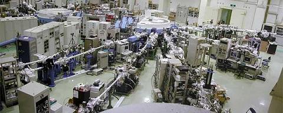

【研究環境】放射光を用いた固体物理研究なら広島

広大には、光物性研究室を母体として生まれた放射光科学研究センター（HiSOR）があります。世界屈指の恵まれた環境に先導的研究者が集結し、固体物理研究にブレイクスルーをもたらしつつあります。また、この分野は、十年余りで測定精度が二桁向上するほど技術革新が速く、研究の対象拡大と高度化が急速に進んでいる活発な領域です。研究を通して研究者・技術者・教育者として活躍していく上で必要な高度に専門的知識と技術を修得することができます。
放射光による固体物理学の研究について (谷口教授より)
現在の研究室の状況
知は集まると、相乗効果を発揮します。
当研究室の学生数は近年増加しつつあり、現在博士課程が6人という強力な研究体制で、日常的に最先端の物理の話をできる刺激的な環境となっています。縦に横に互いに影響し合うことで、研究者・技術者・教育者など科学に携わる仕事を志す若者にとって理想的な伸びる環境が実現しています。(メンバー)
研究室の眺め


研究室風景


研究室からの眺め
Copyright(C) 広島大学大学院理学研究科物理科学専攻光物性研究室